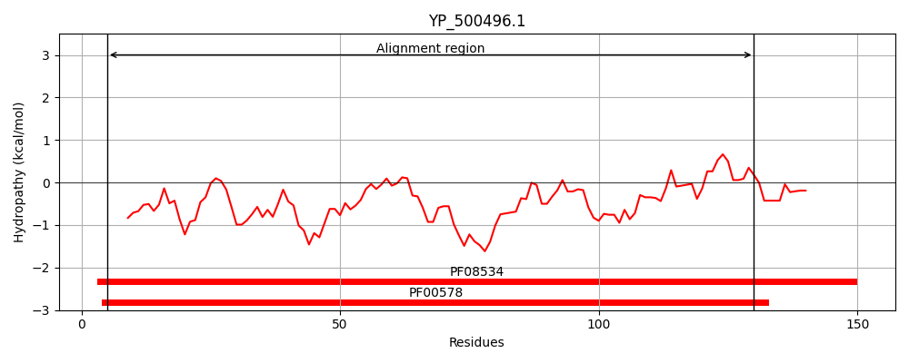
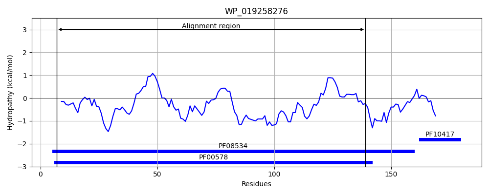
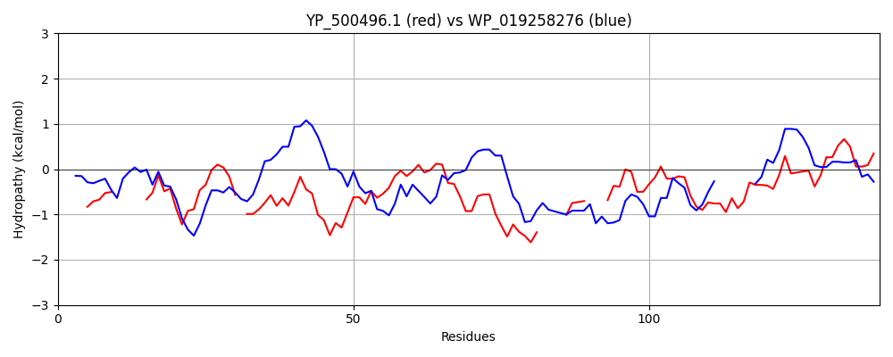

Hit Accession: WP_019258276
Hit TCID: 8.A.147.1.2
Hit Description: gnl|BL_ORD_ID|20912 gnl|TC-DB|WP_019258276.1|8.A.147.1.2 peroxiredoxin [Bacillus subtilis]
Mach Len: 139
e:0.000000
Query TMS Count : 0
Hit TMS Count: 0
TMS-Overlap Score: 0.000000
Predicted Substrates:CHEBI:24493;hemin
BLAST Alignment:
Score: 124 , Bit scores: 52 bits, E-value: 3.6e-09, Alignment length: 139, Percentage identity: 29
Query: 5 GEQFPIFKLE-----NQDGTVITNDTLKGKK-AIIYFYPRDNTPTCTTEACDFRDNLEMFNDLDVAVYGISGDSKKKHQNFI----EKHG---LNFDLLVDEDFKLAKETGVYQLKKSFGKESMGIVRTTFIIDEQGKV 130
G+Q P F++E + G V + +K K +++FYP D T C TE + + F DLD V G+S D+ H +I +++G L + L D + ++++E GV +E +R FII+ +G++
Sbjct: 7 GKQAPRFEMEAVLASKEFGKVSLEENMKKDKWTVLFFYPMDFTFVCPTEITAMSERYDEFEDLDAEVIGVSTDTIHTHLAWINTDRKENGLGQLKYPLAADTNHEVSREYGV------LIEEEGVALRGLFIINPEGEL 139 | Protein Hydropathy Plots: |
|---|
|  |  |
Pairwise Alignment-Hydropathy Plot:
|
|---|
|  |